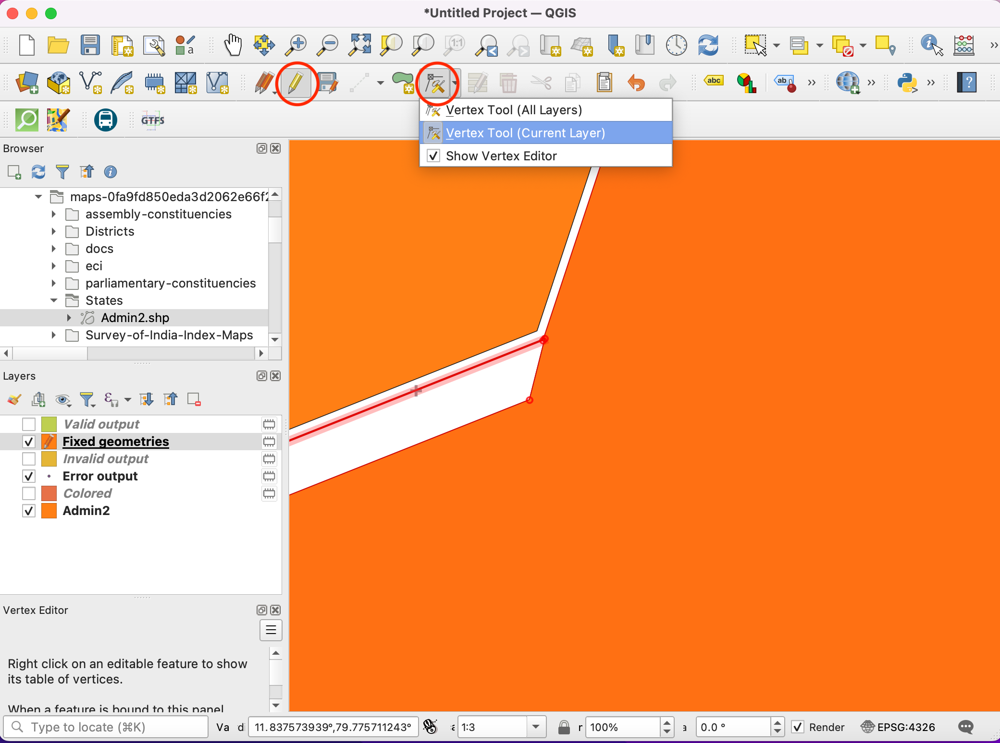
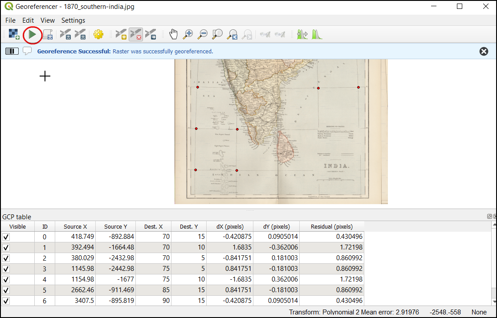

Ujaval Gandhi
Ujaval GandhiGeoreferenzierung von Kartenblättern und eingescannten Karten (QGIS3)¶
Die meisten GIS-Projekte erfordern das Georeferenzieren von Rasterdaten. Georeferenzierung ist der Prozess der Zuweisung von Koordinaten zu jedem Pixel eines Rasterdatensatzes. Oftmals werden die Koordinaten durch Feldarbeit, d. h. durch das Ermitteln der Koordinaten mit Hilfe eines GPS-Gerätes, für einige leicht in der Karte oder dem Bild zu identifizierende Objekte bestimmt. Manchmal findet man beim Digitalisieren auf der gescannten Karte Markierungen, die die Koordinaten anzeigen. Mit Hilfe dieser Markierungspunkte oder Passpunkte (Ground Control Points - GCP) kann das Bild entzerrt und passfähig zum gewählten Koordinatensystem gemacht werden. In dieser Anleitung werden wir die Konzepte, Strategien und Hilfsmittel in QGIS behandeln, um eine hoch genaue Georeferenzierung zu erreichen.
Diese Anleitung beschriebt die Georeferenzierung mit Hilfe von Markierungen die auf der Karte oder dem Bild vorhanden sind (z. B. beschriftete Koordinatengitter). Wenn das verwendete Bild solche Informationen nicht enthält, kann die Methode Georeferenzierung von Luftbildern (QGIS3) angewandt werden .
Überblick über die Aufgabe¶
Wir werden eine gescannte Karte von Südindien aus dem Jahr 1870 nutzen und diese mit Hilfe von QGIS georeferenzieren.
Weitere Fähigkeiten, die wir erlernen¶
wie man das geodätische Datum und das Koordinatensystem alter Karten bestimmt
wie man das erstellte KBS speichert
wie man das erstellte KBS bearbeitet, um eine Feinabstimmung vorzunehmen
Beschaffung der Daten¶
Die Website Hipkiss’s Scanned Old Maps führt eine exzellente Sammlung copyright-freier gescannter Karten, die man zur Nachforschung verwenden kann.
wir laden 1870 map of southern India herunter und speichern die Datei als JPG-Bild auf einem lokalen Laufwerk ab.
Der Einfachheit halber kann auch eine Kopie des Datensatzes unter folgendem Link heruntergeladen werden:
Arbeitsablauf¶
Wir öffnen QGIS und klicken auf , um das Werkzeug zu öffnen.
Bemerkung
Ab der Version 3.26 von QGIS wird die Georeferenzierung aus dem Menü gestartet.

Das Fenster zur Georeferenzierung ist in 2 Bereiche geteilt. Im oberen Bereich wird das Bild angezeigt und im unteren Bereich die Passpunkte in einer Tabelle.

Jetzt werden wir unser JPG-Bild öffnen. Dazu gehen wir zu . Wir navigieren zu dem heruntergeladenen Bild der gescannten Karte und klicken auf Öffnen.

Wir sehen jetzt das Bild, das im oberen Teil des Fensters dargestellt wird. Man kann die Button zum Zoomen und Verschieben aus der Toolleiste nutzen, um die Karte genauer zu betrachten.

Als nächstes müssen wir Koordinaten für einige Punkte auf der Karte zuweisen. Beim genauen Hinsehen findet man ein beschriftetes Koordinatengitter auf der Karte. Es handelt sich dabei um Linien der Breiten- und Längengrade.

Bevor wir Passpunkte (GCP - Ground Control Points) hinzufügen, müssen wir die Transformationseinstellungen festlegen. Wir wählen .

Im Dialogfenster Transformationseinstellungen wählen wir aks Transformationstyp
Polynomial 2aus. In der QGIS-Dokumentation findet man weitere Informationen über die verschiedenen Transformationstypen and deren Einsatz. Wir klicken auf das Icon KBS wählen neben der Drop-Down-Liste Ziel-KBS.

Wenn man eine gescannte Karte wie diese georeferenziert, kann die Information zum Koordinatensystem der Karte selbst entnommen werden. Wenn wir auf unsere Karte sehen, erkennen wir, dass die Koordinaten in Breiten- und Längengraden enthalten sind. Es ist kein geodätisches Datum auf der Karte verzeichnet, so dass wir hier eine Annahme treffen müssen. Da es sich um Indien handelt und die Karte ziemlich alt ist, wird wahrscheinlich das geodätische Datum Everest 1830 gut passen. Wir suchen nach „everest“ und wählen das Koordinatensystem mit der ältesten Angabe des geodätischen Datums Everest (EPSG:4042). abschließend klicken wir auf OK.

Bemerkung
Topographische Karten des nationalen indischen Vermessungsamtes zwischen 1960 und 2000 nutzten den Rotationsellipsoid Everest 1956 und das geographische Datum India_nepal. Wenn man Karten des indischen Vermssungsamtes georeferenziert, kann man in QGIS ein angepasstes Koordinatensystem mit den folgenden Parametern definieren. Die Definition beinhaltet die Parameter delta_x, delta_y und delta_z zur Transformation ins System WGS84. Weitere Informationen findet man unter Indian Grid System.
+proj=longlat +a=6377301.243 +b=6356100.2284 +towgs84=295,736,257,0,0,0,0 +no_defs
Bemerkung
Die meisten Karten verwenden ein projiziertes KBS. Es kann sein, dass die Karte, die georeferenziert werden soll, ein projiziertes KBS verwendet, die Beschriftung an den Koordinatengittern aber im geographischen System (Länge/Breite) erfolgt. In einem solchem Fall kann man ein alternatives Vorgehen wählen, um Verzerrungen zu verringern. Man erstellt dazu ein Vektorgitter und transformiert es in das bekannte projizierte KBS. Man nutzt das Gitter dann als Referenz zur genauen Erfassung der Koordinaten. Weitere Einzelheiten findet man unter folgender Seite: this page.
Wir benennen die Ausgabedatei mit
1870_southern_india_modified.tifund wählenLZWals Kompression. Es sollte sichergestellt sein, dass die Option Nach Fertigstellung ins Projekt laden aktiviert ist. abschließend klicken wir OK.

Bemerkung
Unkomprimierte GeoTIFF Dateien können sehr viel Platz auf dem Datenträger belegen. Daher ist es immer sinnvoll, sie zu komprimieren. Weitere Informationen über die verschiedenen Möglichkeiten der Kompression von TIFF-Dateien (LZW, PACKBITS oder DEFLATE) findet man unter this article.
Nun können wir mit dem Hinzufügen von Passpunkten beginnen. Dazu klicken wir auf das Icon Punkt hinzufügen.

Wir setzen das Fadenkreuz über die Schnittpunkte der Gitternetzlinien und klicken mit der linken Maustaste. In unserem Fall wird dies der Verifizierung dienen. Das die Gitternetzlinien beschriftet sind, können wir die X- und Y-Koordinaten der Schnittpunkte ermitteln; X bedeutet dabei geografische Länge und Y geografische Breite. Nach der Eingabe klicken wir OK.

Der Punkt wird in die erste Zeile der Passpunkttabelle eingetragen.

Auf die gleiche Weise fügen wir weitere Passpunkte hinzu, die das gesamte Bild abdecken. Je mehr Passpunkte gesetzt werden, desto genauer werden die Zielkoordinaten erfasst. Die Transformationsmethode
Polynomial 2erfordert mindestens 6 Passpunkte. Sobald die Minimalzahl an Passpunkten für die Transformation erreicht ist, werden die SpaltendX (Pixel),dY (Pixel)undRest (Pixel)von 0 abweichende Werte enthalten. Sollte ein einzelner Passpunkt einen ungewöhnlich hohen Wert in einer dieser Spalten erreichen, kann auf einen Eingabefehler geschlossen werden. Dieser Punkt kann gelöscht und neu erfasst werden. Die Koordinaten können auch durch Klick in die Spalten Ziel X und Ziel Y der Passpunkttabelle bearbeitet werden.

Sobald die Erfassung der Passpunkte zufriedenstellend erfolgt ist, können wir über das Bild mit Hilfe der Passpunkte entzerren.

Wenn der Prozess beendet ist, wird der georeferenzierte Layer in QGIS geladen. Die Georeferenzierung ist nun abgeschlossen. Außerdem wird als Projekt-KBS EPSG:4042 wie in den Transformationseinstellungen festgelegt in der rechten unteren Ecke des QGIS-Fensters angezeigt.

Als Basis-Karte platzieren wir nun per Drag & Drop
OpenStreetMapaus dem Dropdown-Menü XYZ Tiles des Browser-Fensters im Layer-Fenster, um den georeferenzierten Layer zu überprüfen. Um die Transparenz zu ändern, klicken wir auf das Icon Layergestaltungsfenster öffnen und wählen den Bereich Transparenz. Wir setzen die Transparenz auf40 %. Das georeferenzierte Bild sollte nun an den Grenzen mit der Basis-Karte übereinstimmen.

Wenn die Georeferenzierung weiteres Fein-Tuning erfordert, können wir die Passpunkte als Ausgangwerte verwenden. Wir erkunden dazu das Verzeichnis, in dem das Bild
1870_southern_india_modified.tifabgelegt wurde. Dort ist eine weitere Datei1870_southern_india_modified.tif.pointszu finden. Diese enthält die Informationen zu den Passpunkten.

Wir öffnen das Werkzeug zur Georeferenzierung, dort und wählen
1870_southern_india_modified.tif.points. Dadurch werden die zuvor erstellten Passpunkte geladen. Anschließend laden wir die Datei ``1870_southern_india_modified.tif`, um ein Feintuning der Passpunkte vorzunehmen.

{kind=link}
{kind=link}
If you want to give feedback or share your experience with this tutorial, please comment below. (requires GitHub account)